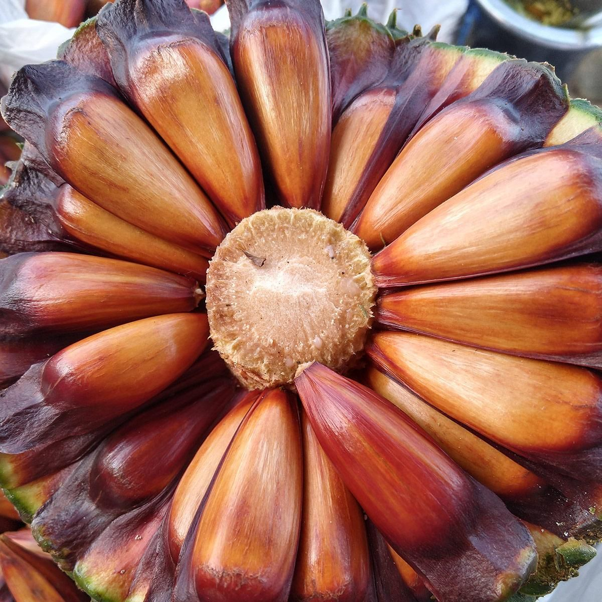
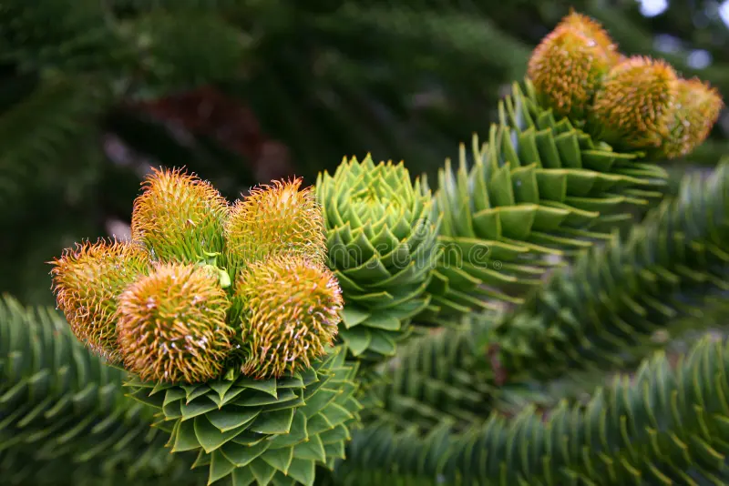
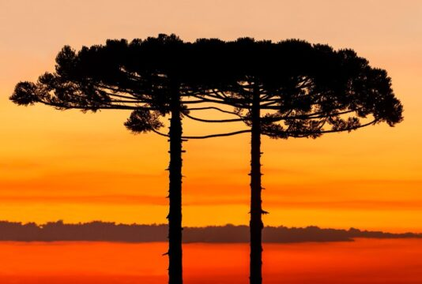
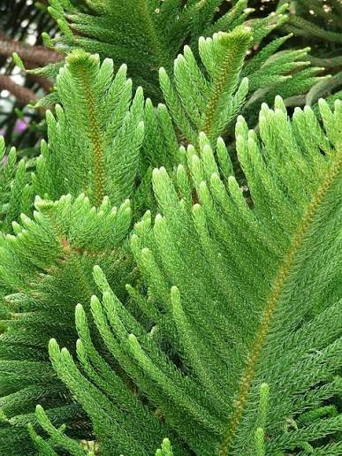

importancia da araucaria
A araucária é uma das árvores mais emblemáticas do sul do Brasil e um importante símbolo da Mata Atlântica. Conhecida cientificamente como Araucaria angustifolia, ela pode atingir mais de 40 metros de altura e viver por centenas de anos. Sua copa em formato de candelabro a torna facilmente reconhecível na paisagem. Além de sua beleza, a araucária tem grande importância ecológica. Suas sementes, chamadas pinhões, servem de alimento para diversos animais, como a gralha-azul, que também desempenha um papel fundamental na dispersão das sementes, contribuindo para a regeneração das florestas. A araucária também possui valor cultural e econômico. O pinhão é um alimento tradicional da culinária do sul do Brasil, sendo consumido cozido, assado ou utilizado em diversas receitas. No entanto, devido ao desmatamento e à exploração excessiva, a espécie encontra-se ameaçada de extinção, tornando sua preservação essencial para a manutenção da biodiversidade e do patrimônio natural brasileiro. Proteger a araucária significa preservar não apenas uma árvore, mas também a história, a cultura e o equilíbrio ambiental das regiões onde ela ocorre.

sobre a araucaria
A araucária é uma árvore nativa do sul do Brasil e um dos principais símbolos da região. Seu nome científico é Araucaria angustifolia, e ela pertence ao grupo das coníferas. Pode alcançar até 50 metros de altura e viver por mais de 200 anos. Sua copa tem um formato característico, com galhos que lembram um guarda-chuva. A araucária produz o pinhão, uma semente muito apreciada na culinária brasileira e importante fonte de alimento para animais como a gralha-azul, que ajuda a espalhar suas sementes pela floresta. Essa espécie é encontrada principalmente nos estados do Paraná, Santa Catarina e Rio Grande do Sul. No entanto, devido ao desmatamento e à exploração de sua madeira, a araucária está ameaçada de extinção. Por isso, é fundamental preservar as florestas de araucárias e incentivar ações de conservação para garantir que essa árvore continue fazendo parte da natureza e da cultura brasileira.

contexto historico da araucaria
A araucária, também conhecida como pinheiro-do-paraná (Araucaria angustifolia), possui uma longa relação com a história e a cultura das populações do sul do Brasil. Antes da chegada dos colonizadores europeus, povos indígenas, especialmente os povos Guarani, Kaingang e Xokleng, já utilizavam o pinhão como importante fonte de alimento e aproveitavam os recursos oferecidos pela floresta de araucárias. Durante os séculos XIX e XX, a araucária passou a ter grande importância econômica devido à qualidade de sua madeira, que foi muito explorada para a construção civil, produção de móveis e exportação. A intensa retirada das árvores contribuiu para a redução das grandes áreas de floresta de araucárias que existiam no passado. No século XX, a exploração madeireira e a expansão agrícola provocaram uma grande diminuição da presença da espécie na paisagem sul-brasileira. Com o reconhecimento de sua importância ambiental e cultural, surgiram medidas de proteção e projetos de preservação para evitar sua extinção. Atualmente, a araucária é considerada um símbolo da região Sul do Brasil e representa a importância da conservação das florestas nativas, da biodiversidade e da relação entre natureza e cultura.

importancia cultural da araucaria
A araucária possui grande importância cultural, especialmente para os povos e comunidades do sul do Brasil. Durante séculos, ela fez parte da vida dos povos indígenas, que utilizavam o pinhão como alimento e aproveitavam os recursos da floresta de forma sustentável. O pinhão, semente produzida pela araucária, tornou-se um elemento tradicional da culinária regional, sendo consumido em festas, encontros familiares e celebrações típicas, principalmente durante o inverno. A colheita do pinhão também representa uma prática cultural que reúne comunidades e mantém vivas tradições passadas de geração em geração. Além disso, a araucária se tornou um símbolo de identidade dos estados do Paraná, Santa Catarina e Rio Grande do Sul, estando presente em paisagens, artes, músicas e manifestações culturais da região. Sua preservação representa não apenas a proteção de uma espécie da natureza, mas também a valorização da história e dos costumes das populações que convivem com ela.
